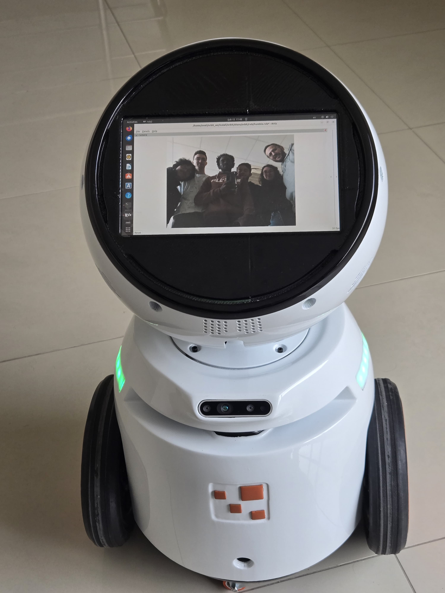
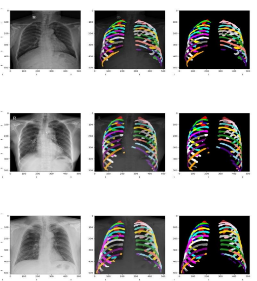

Projects
Computer Vision
LiDAR Location Detection for Autonomous Docking to an AMR Robot

Facial Recognition

Facial Recognition (One-Shot Learning)
Age and Gender Detection

Natural Language Processing
Voice to Voice Question Answering with OpenAI Realtime API
NER Token Classification and BI-Rads Classes Classification based on Turkish Medical Report

Chatbot for Tourist Attraction

Medical Imaging
Rib Segmentation
BI-RADS Classification based on Mammography Images
About Me
Hi, I am Baihaqi. I am a fresh graduate in Biomedical Engineering with a strong passion for combining healthcare and technology. Throughout my academic journey, I have developed both theoretical knowledge and practical skills by participating in research projects, competitions, and hands-on coursework. My interests include medical device development, AI integration in healthcare, and data-driven problem solving. I’m eager to contribute to innovative solutions that enhance patient care and medical technologies.
Technical Skills
- Medical Device Testing & Calibration
- AI & Machine Learning Implementation
- Programming in Python, C#, and C/C++
- Data Analysis with pandas, NumPy, and visualization tools
- Embedded Systems and Microcontroller Integration
- Realtime Systems with WebSocket & OpenAI Realtime API
- Langchain & LLM (ChromaDB, AWS Bedrock, OpenAI)
- CI/CD Pipelines and DevOps Workflows
Software & Tools
- SolidWorks (CAD design and simulation)
- Git, GitHub, GitLab for version control
- AWS Services & RESTful API Integration
- SQL, MongoDB, and ChromaDB for data storage
- MATLAB, LabVIEW (basic proficiency)
Soft Skills
- Team Collaboration in research and development
- Strong Analytical and Problem-Solving Skills
- Clear and Effective Communication
- Adaptability in fast-paced environments
- Initiative-driven and self-motivated
Contact
Feel free to reach out
Extra
Published Papers
An Approach to Classifying Breast Density Level Using Deep Learning-Based Segmentation Model on Full-Field Digital Mammograms
Read MoreA Comparative Study of Breast Mass Detection Using YOLOv8 Deep Learning Model in Various Data Scenarios on Multi-View Digital Mammograms
Read MoreApplication of Recurrent Neural Network Bi-Long Short-Term Memory, Gated Recurrent Unit and Bi-Gated Recurrent Unit for Forecasting Rupiah Against Dollar (USD) Exchange Rate
Read More